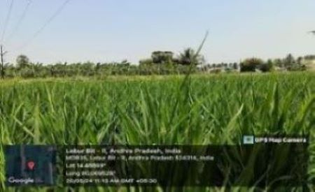
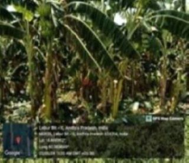

WEEKLY REPORT
WEEK- 2 (From 20-05-24 to 25-05-24)
Objective of the Activity Done: Survey on Agriculture
Detailed Report:
Day 1:
- >Agriculture is one of the most important aspects of everyone’s life.
- >It is something that is necessary for the survival of each and every human being.
- >Agriculture has been derived from two Latin words ‘ager’ and ‘cultura’.
- >Where ager means ‘field’ and cultura means ‘growing’.
- >So the literal meaning of agriculture is the ‘cultivation of fields’.
Day 2:
- The main types of Agriculture in India:
- >Plantation agriculture
- >Mixed farming
- >Intensive agriculture
- >Commercial farming
- >Subsistence agriculture
Day 3:
- Preparation of soil:
- >Before sowing seeds, the soil is broken into size of grains to get better yield.
- >Loosening and turning of soil is called Tilling or ploughing.
- >These are the important steps in agriculture.
Day 4:
- Different types of soils in India:
- >Black cotton soil
- >Red soil
- >Laterite soil
- >Mountainous soil
- >Desert soil
Day 5:
- >Indian council of agricultural research.
- >Ministry of agriculture and farmers welfare.
- >Food tank.
- >National bank of agriculture and rural development.
- >Agriculture marketing Service.
- >National farmers union etc.
Day 6:
- People depend on a wide range of agricultural products in almost all aspects of life:
- >Nutrition is a key determinant of human health.
- >Provider of energy.
- >Fiber.

